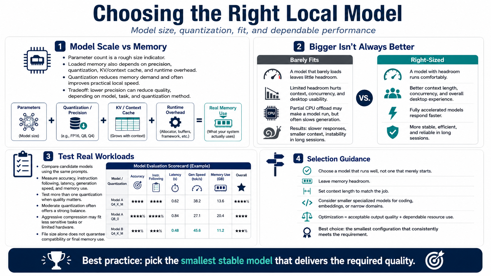

Model Size and Quantization
Connecting to LMS... Progress: in progress

Narration
Parameter count gives a rough indication of model scale, but loaded memory also depends on numerical precision, quantization format, context cache, and runtime overhead. Quantization stores weights with fewer bits, reducing memory demand and often improving practical local speed. The tradeoff is potential quality loss, which varies by model, task, and quantization method.
A larger model is not automatically better for a local workflow. If it barely loads, there may be no headroom for context, concurrent requests, or graphical applications. Partial CPU offload can make it run but reduce generation speed. A smaller model that remains fully accelerated may respond sooner, support a larger useful context, and stay stable through a long session.
Compare candidate models on representative tasks. Use the same prompts and evaluate accuracy, instruction following, latency, generation speed, and memory. Test more than one quantization when quality matters. Moderate quantization often provides a useful balance, while aggressive compression may be appropriate for less sensitive tasks or limited hardware. File size alone does not prove runtime compatibility or final memory use.
Choose a model that runs well, not one that merely starts. Leave memory headroom, select a context appropriate to the job, and consider specialized smaller models for coding, embeddings, or narrow domains. Optimization is the combination of acceptable output quality and dependable resource use. The right model is the smallest configuration that meets the requirement consistently, not the largest one the loading screen can survive.